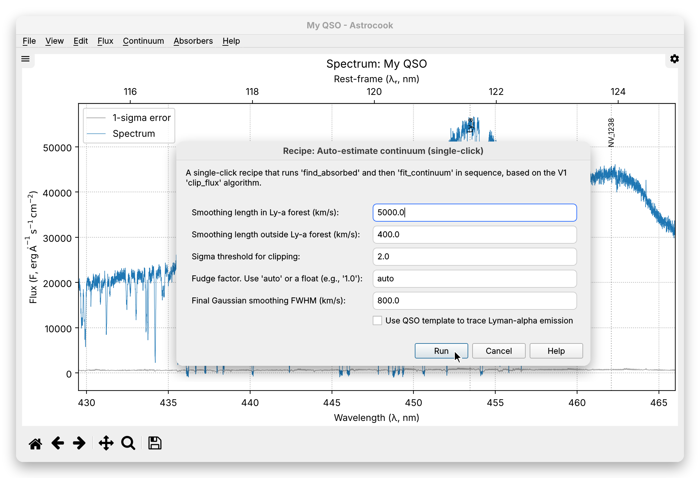
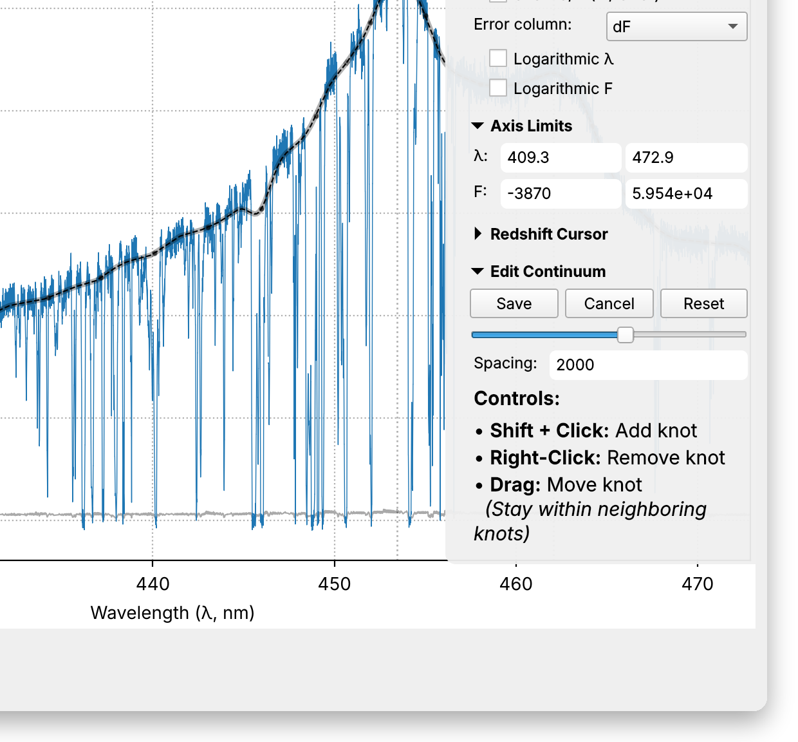

Continuum Fitting#
A robust continuum fit is the backbone of any absorption line analysis. Astrocook provides both automated algorithms for quick estimation and interactive tools for fine-tuning. This tutorial covers the Continuum menu and the manual editing tools.
1. Automatic Estimation#
For most quasar spectra, the automated pipeline provides an excellent starting point. It uses an iterative kappa-sigma clipping algorithm to distinguish absorption lines from the continuum.
Note
This recipe requires Emission Redshift (\(z_{em}\)) to be defined. If missing, Astrocook will automatically prompt you to set them via the Set Properties dialog before proceeding.
Go to Continuum > Auto-estimate Continuum….
Adjust the parameters if necessary:
Smoothing (Ly-a / Out): Defines the scale of the smoothing spline. The default
5000km/s for the Ly-alpha forest and400km/s for the red side usually work well.Kappa: The sigma threshold for clipping absorption (default
2.0). Lower values make the algorithm more aggressive at finding lines.Fudge: A multiplicative factor applied to the continuum (default
1.0).autocomputes it from the residuals of the unabsorbed pixels; since Astrocook v2 interpolates the continuum through those pixels,autocurrently gives exactly1.0.Smooth FWHM: The width of the final Gaussian smoothing of the continuum, as a FWHM in km/s (default
800, which reproduces the V1 continuum). Older scripts may passsmooth_std(a standard deviation, as in earlier V2 versions): it is still accepted and takes precedence.
Click Run.
Astrocook will generate a new continuum curve (black dashed line). If you have a model (absorption lines) already defined, it will automatically re-normalize it to match the new continuum.
Tip
You can use the Data Inspector (Right-click on the plot) to examine the exact continuum values (cont) and residuals at any pixel. See The Data Inspector.

Step-by-Step Method#
If you need more control, you can run the process in two steps:
Continuum > Find Absorbed Regions…: Creates a mask (
abs_mask) separating line/continuum.Continuum > Fit Continuum to Mask…: Interpolates the continuum only over the unmasked regions. This allows you to manually edit the
abs_mask(via Apply Expression) between steps if the automatic masking missed something.
2. Interactive Manual Editing#
Automatic fits sometimes fail near complex emission lines or spectral edges. You can correct these manually using the Right Sidebar.
Starting the Editor#
Look at the Edit Continuum section in the right sidebar.
Click the Start button.
The spectrum will be overplotted with a Draft Continuum (thick black line) and a series of Knots (circular markers).
Note
If no continuum exists yet, Astrocook will prompt you to run the Auto-estimate routine first. You cannot edit the raw flux directly.
Tip
Manual editing modifies the session in place. If you want to compare your manual fit against the automatic one, use the Duplicate command in the Session List context menu to create a backup copy before you start editing.
Modifying Knots#
The continuum is treated as a frozen master curve. The visible knots act as handles to locally bend this curve.
Move:
Left-clickand drag a knot to adjust the continuum level locally. (Warning: To maintain mathematical stability, do not drag a knot horizontally past its immediate left or right neighbors).Add:
Shift + Left-clickanywhere on the plot. A new knot will be created at that X-coordinate, perfectly snapped to the existing curve.Remove:
Right-clickon an existing knot to delete it.
When you add, move, or remove a knot, the shape of the continuum is only recalculated in the immediate vicinity of that action. The rest of the curve remains safely locked in place.
Controlling Stiffness (Slider & Spacing)#
You can adjust the knot density (the number of visual handles) using the slider or the Spacing text box.
Slider: Drag left to increase density (more knots) or right to decrease it (fewer knots).
Spacing Box: Type a precise velocity spacing (in km/s) and press Enter.
Important
Changing the spacing does not change the shape of your continuum. The slider simply resamples the frozen curve, placing new knots along its existing path. If you want to discard all your manual edits and generate a completely fresh continuum from the underlying data, click the Reset button.

Saving and Canceling#
Once editing is active, the sidebar buttons update to reflect the “active state”:
Save: Finalizes your manual knots and updates the session history. You will be asked if you wish to re-normalize the absorption model to match the new continuum.
Cancel: Discards all pending visual edits and reverts the plot to the last saved state.
Reset: Discards manual placements and restores the original knot distribution based on the current spacing value.
Workflow Safety#
To prevent accidental data loss, Astrocook monitors your editing state:
Session Switching/Opening Files: If you attempt to switch sessions or open a new file while editing, a dialog will appear asking you to Save, Cancel, or Not Save.
Redshift Cursor: Activating the Redshift Cursor will prompt you to close the Continuum Editor first to avoid interaction conflicts.
3. Power-Law Fitting#
For quasars, it is often useful to fit a power-law continuum (\(F_\lambda\propto\lambda^{-\alpha}\)) to estimate the underlying emission before determining the detailed shape.
Note
This operation assumes your spectrum is flux calibrated (the overall shape is physically meaningful). It also requires Emission Redshift (\(z_{em}\)) to be defined. If missing, Astrocook will automatically prompt you to set them via the Set Properties dialog before proceeding.
Go to Continuum > Fit Power-Law….
Regions: Enter a list of comma-separated wavelength ranges (in rest-frame nm) known to be free of emission lines.
Default:
128.0-129.0, 131.5-132.5, 134.5-136.0(standard windows outside the Lyman forest).
Click Run.
This creates a new column cont_pl which is automatically displayed on the plot (via the Aux. Column selector). You can use it as a baseline for further fitting.